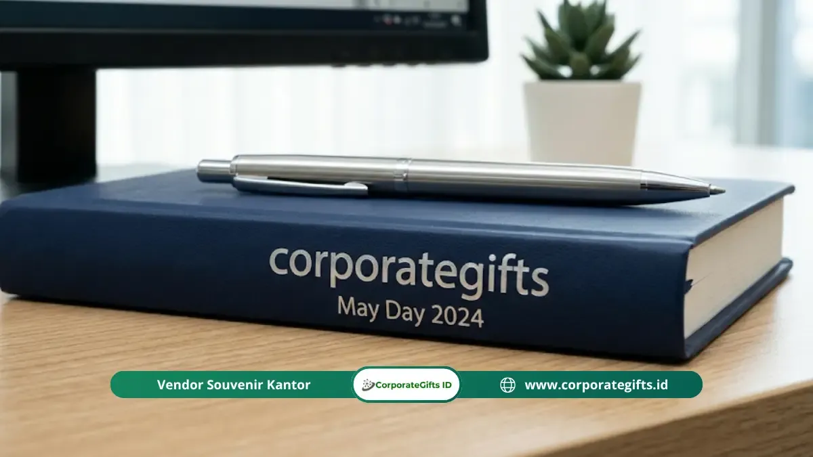

Corporate Gifts ID - Rekomendasi souvenir hari buruh nasional terbaik 2026 mencakup produk fungsional harian seperti kaos custom katun, tumbler stainless steel, tote bag kanvas, lanyard, dan pin berlogo. Kelima produk ini paling sering digunakan sehari-hari, sangat mudah dikustomisasi dengan identitas organisasi atau serikat pekerja, serta sangat relevan dengan semangat kebersamaan dan peringatan 1 Mei untuk semua rentang anggaran.
Poin Kunci Rekomendasi Souvenir Hari Buruh:
- Produk Terpopuler: Kaos katun combed dan tumbler stainless steel menjadi cinderamata paling diminati dan memiliki tingkat kepuasan tertinggi.
- Solusi Ramah Lingkungan: Tote bag kanvas tebal menawarkan fungsi serbaguna yang berkelanjutan untuk kebutuhan harian pekerja.
- Efisiensi Anggaran: Lanyard printing dan pin custom memberikan identitas visual kuat untuk acara berskala ribuan peserta dengan biaya terjangkau.
- Faktor Nilai Guna: Riset membuktikan 71% pekerja lebih menghargai souvenir fungsional daripada pajangan dekoratif semata.
- Kustomisasi Tepat Sasaran: Penyesuaian profil audiens dan konteks acara lebih krusial dibandingkan sekadar memilih harga per item termurah.
Mengapa Memilih Souvenir yang Tepat Menentukan Keberhasilan Acara?
Pengadaan souvenir hari buruh nasional yang tepat mampu meningkatkan kesan positif acara, memperkuat identitas organisasi atau serikat, serta meninggalkan kenangan nyata yang berkesan bagi seluruh peserta. Sebaliknya, pemilihan souvenir yang keliru dapat terkesan tidak menghargai penerima dan membuang anggaran pengadaan yang seharusnya bisa dioptimalkan untuk dampak jangka panjang.
Berdasarkan riset preferensi peserta acara ketenagakerjaan, sebanyak 71 persen responden menyatakan jauh lebih menghargai souvenir yang memiliki fungsi praktis nyata dibandingkan produk dekoratif semata. Data ini menegaskan bahwa nilai guna harian adalah faktor penentu fundamental dalam menghadirkan rasa puas dan apresiasi tulus bagi para pekerja.
Rekomendasi Souvenir Hari Buruh Nasional Terbaik Per Kategori
Untuk memudahkan panitia, instansi, atau pengurus serikat dalam menyusun rencana pengadaan merchandise perusahaan, rekomendasi cinderamata Hari Buruh Nasional 2026 dikelompokkan ke dalam beberapa kategori unggulan berdasarkan fungsi dan target penerima:
1. Kategori Paling Ikonik: Kaos Custom Katun Combed
Kaos custom dengan sablon logo serikat atau slogan semangat kerja adalah souvenir Hari Buruh paling ikonik dan legendaris. Tingkat visibilitasnya sangat tinggi karena kerap dipakai kembali di luar jam kerja, menciptakan eksposur identitas organisasi yang terus berjalan secara organik tanpa biaya promosi tambahan.
Gunakan bahan cotton combed 24s atau 30s premium dengan teknik cetak sablon rubber berkualitas tinggi atau Direct to Film (DTF) agar warna gambar tajam dan tahan dicuci berulang kali.
2. Kategori Fungsional Harian: Tumbler Stainless Custom
Tumbler berbahan stainless steel food-grade dengan grafir laser atau sablon presisi merupakan cinderamata dengan nilai kegunaan harian tertinggi. Produk ini digunakan setiap hari di meja kerja, pabrik, maupun saat bepergian, sehingga memperpanjang usia promosi identitas organisasi bertahun-tahun.
Pilihan kapasitas ideal berada di rentang 500 ml hingga 750 ml dengan tutup anti-bocor (vacuum insulated) yang mampu menjaga suhu minuman panas maupun dingin hingga 8 jam.

Pilihan produk merchandise dan souvenir custom Hari Buruh dengan nilai guna harian tinggi.
3. Kategori Ramah Lingkungan: Tote Bag Kanvas Custom
Tote bag kanvas memadukan fungsi praktis, daya tahan kuat, dan nilai keberlanjutan ramah lingkungan dalam satu produk. Pilihan ini merefleksikan kepedulian terhadap pengurangan sampah plastik sekaligus sangat fleksibel untuk membawa bekal kerja, dokumen, atau belanjaan harian.
Pilihlah material kain kanvas dengan gramasi minimal 350 gsm, dilengkapi jahitan penguat cross-stitch pada bagian tali pegangan, dan ukuran standar A3 agar kapasitas muatnya maksimal.
4. Kategori Aksesoris Identitas: Lanyard dan Pin Custom
Lanyard cetak printing berfungsi ganda sebagai tali ID card resmi peserta selama acara berlangsung sekaligus cinderamata yang siap dibawa pulang untuk kebutuhan kerja harian. Sementara itu, pin enamel atau akrilik custom adalah opsi souvenir paling ekonomis yang tetap estetik, sangat ideal untuk acara massal yang melibatkan ribuan peserta.
5. Kategori Profesional: Pulpen Metal dan Buku Catatan Custom
Bagi sesi seminar ketenagakerjaan, rapat kerja, atau kongres serikat, kombinasi pulpen metal grafir nama dan buku catatan hardcover custom memberikan impresi profesional yang kuat. Dikemas dalam hardbox eksklusif, set ini sangat tepat dijadikan penghargaan bagi jajaran panitia inti atau pengurus organisasi.
6. Kategori Acara Lapangan: Topi Custom Bordir
Topi baseball atau bucket hat dengan bordir logo timbul adalah pilihan favorit untuk kegiatan jalan sehat, aksi solidaritas, atau gathering lapangan. Selain melindungi peserta dari terik sinar matahari, topi custom menghasilkan keseragaman visual kelompok yang rapi saat didokumentasikan.
Matriks Perbandingan Souvenir Hari Buruh Nasional
Berikut rangkuman perbandingan karakteristik, kisaran estimasi biaya, dan keunggulan dari setiap opsi produk souvenir Hari Buruh Nasional:
| Kategori Souvenir | Pilihan Produk Utama | Estimasi Budget / Pcs | Kelebihan & Nilai Guna |
|---|---|---|---|
| Paling Ikonik | Kaos Custom Combed 24s/30s | Rp45.000 - Rp75.000 | Visibilitas branding organik tinggi saat dipakai harian pasca acara. |
| Fungsional Harian | Tumbler Stainless Steel Laser Grafir | Rp35.000 - Rp85.000 | Ketahanan 3-5 tahun, food-grade, menjaga suhu minuman kerja. |
| Eco-Friendly | Tote Bag Kanvas Premium A3 | Rp20.000 - Rp45.000 | Serbaguna, kuat membawa beban berat, mendukung gaya hidup hijau. |
| Budget Massal | Lanyard Printing & Pin Metal/Akrilik | Rp7.500 - Rp20.000 | Ekonomis untuk ribuan massa, atribut identitas instan di lapangan. |
| Eksekutif / Rapat | Gift Set Pulpen Metal & Notebook Agenda | Rp65.000 - Rp150.000 | Kesan profesional elegan untuk jajaran pengurus atau perwakilan serikat. |
| Aktivitas Outdoor | Topi Baseball Bordir Custom | Rp25.000 - Rp45.000 | Pelindung panas saat aksi/gathering, keseragaman visual kelompok. |
Pilihan Souvenir Hari Buruh untuk Anggaran Terbatas
Jika alokasi anggaran panitia berada di bawah Rp25.000 per orang, kombinasi pin custom, lanyard printing tisu, stiker vinyl, atau gelang karet silikon (wristband) adalah pilihan terbaik. Produk-produk ini tetap tampil memikat dengan sentuhan grafis yang matang dan memberikan rasa memiliki yang kuat di antara peserta.
Strategi paling cerdas untuk alokasi dana terbatas adalah memilih satu item dengan kualitas terbaik dibanding membagikan beberapa item souvenir berkualitas rendah yang cepat rusak. Fokuslah pada produk yang benar-benar akan disimpan dan dimanfaatkan oleh penerima.
Urutan Souvenir Hari Buruh yang Paling Disukai Penerima
Berdasarkan preferensi empiris audiens dalam perhelatan ketenagakerjaan, urutan hadiah yang paling disukai secara konsisten adalah:
- Kaos Custom Katun: Berada di peringkat teratas karena langsung dapat dikenakan dan bernilai guna tinggi.
- Tumbler Stainless Steel: Pilihan favorit karena mendukung kepraktisan minum air putih di lingkungan kerja.
- Tote Bag Kanvas: Sangat diminati karena fungsi fleksibelnya dalam aktivitas belanja dan mobilisasi harian.
- Lanyard & Pin Custom: Cinderamata identitas praktis yang tahan lama.
Produk murni dekoratif seperti miniatur pajangan atau plakat kecil cenderung kurang disukai karena berakhir hanya menumpuk debu di lemari penyimpanan tanpa kegunaan fungsional.
Tips Praktis Memilih Souvenir Hari Buruh bagi Panitia
Sebelum menerbitkan purchase order atau mengirimkan formulir penawaran harga di halaman minta penawaran, pastikan panitia telah memetakan 3 parameter kunci:
- Alokasi Anggaran Total dan Satuan: Tentukan batas toleransi budget per orang agar pemilihan bahan material tepat sasaran.
- Karakteristik & Demografi Penerima: Kenali kebutuhan mayoritas pekerja (usia, preferensi gender, dan aktivitas kerja harian).
- Tema Acara & Timeline Produksi: Sediakan waktu pengerjaan minimal 7 hingga 14 hari kerja untuk memastikan proses sablon, bordir, atau grafir melewati quality control ketat sebelum hari H (1 Mei).
Kesimpulan: Membangun Solidaritas Lewat Cinderamata Bermakna
Rekomendasi souvenir Hari Buruh Nasional terbaik selalu berakar pada satu prinsip utama: pilihlah produk yang memiliki nilai manfaat nyata dalam kehidupan sehari-hari pekerja. Kaos, tumbler, tote bag, lanyard, dan pin custom telah teruji menjadi medium apresiasi yang tidak hanya memperkuat ikatan emosional organisasi, tetapi juga menghadirkan kebanggaan kolektif yang berkelanjutan.
Konsultasikan kebutuhan merchandise dan souvenir kantor instansi Anda bersama tim spesialis kami di layanan pengadaan souvenir kantor CorporateGifts.ID untuk mendapatkan penawaran harga B2B terbaik dan sampel digital gratis.


![[Update 2026] Tren dan Jenis Souvenir Kantor Kekinian - CorporateGifts.ID](../assets/img/blog/souvenir-kantor-kekinian-2025-1.webp)